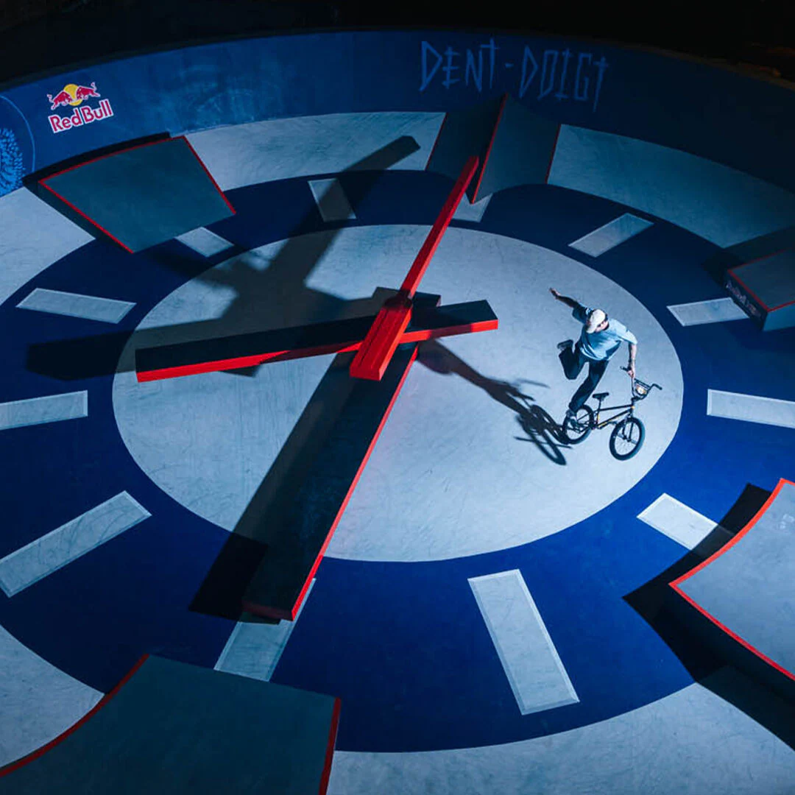

SWATCH: A Timeless Brand

Founded in 1983 by Nicolas Hayek in Switzerland as part of the Swiss response to the Quartz Crisis, Swatch not only survived but thrived, leaving a lasting impact on the watch industry and popular culture. Today, the Swatch Group is one of the largest watch manufacturers. Swatch watches are not just time-telling devices; they are affordable, stylish fashion accessories. Dive deeper into the world of Swatch!
Recent Trends
Our quartz watches offer superior accuracy compared to mechanical ones while remaining affordable. This allows Swatch to make watches accessible to a wider audience. Additionally, quartz technology enhances durability, enabling us to focus on bold designs, vibrant colors, and fashionable styles.
Positive Impact

Swatch has revitalized the Swiss watch industry by dominating the affordable watch segment and re-popularizing analog watches. Our trendy and unique designs have democratized fashion while influencing global consumer trends and sustainability efforts. Swatch success helped revive the Swiss watch industry by dominating the affordable watch segment and re-popularizing analog watches along with democratizing fashion by our trendy and unique watches. It had also influenced global consumer trends, sustainability efforts.
It’s time to give your style a new look! Discover the latest releases and find your next Swatch.
Technology

Swatch has embraced innovation by upgrading traditional watchmaking methods with modern materials like quartz, bioceramic, and plastic. These innovations align with Swatch's values of fun, fashion, affordability, and durability. By combining bold designs with cutting-edge technology, Swatch has maintained its position as an influential player in the watch industry. We revolutionized watchmaking by creating affordable, stylish quartz watches with Swiss-made quality. We've gone beyond design to include breakthrough technologies like Swatch ACCESS and SISTEM51. With recent innovations like SwatchPAY! and BIOCERAMIC, we continue to push boundaries as well as expand the use of alternative and biosourced materials.
Negative Impact Of Technology

While Swatch uses different technologies, it has also had negative impact mainly in declining of traditional crafting of our watches. The rise of our Swatch watch has declined our handmade products that lead to the increase of watches full of technologies.
This has made Swatch discontinue the old fashioned handcrafted watches.